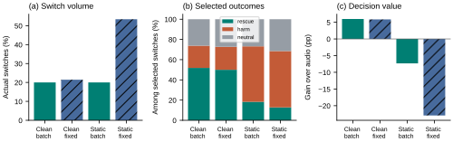
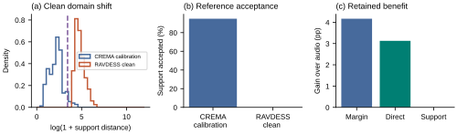
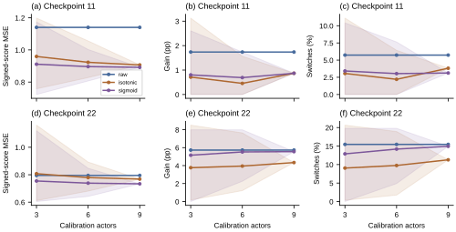
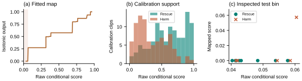

Direct-routing losses
Static occlusion produces negative fixed-threshold gain across three fusion heads and five checkpoints. Newly executed external head inference; shared frozen encoders.
A useful correction and a harmful replacement can both look confident. We measure what changes when the decision rule, visual evidence, calibration support, and fusion head change.
Read the paper · 8 pages + references20-page supplementExplore measured decisions ↓
Static occlusion produces negative fixed-threshold gain across three fusion heads and five checkpoints. Newly executed external head inference; shared frozen encoders.
Confidence increase is not universal. Harmful switching recurs more broadly than the specific score-rise example.
Support rejection trails margin on 24 RAVDESS actors. Paired 95% interval: [−6.42, −1.91]. It rejects every clean external clip.
Evidence status. The original external comparison was locally locked before inference. Head, preprocessing and calibration-subset extensions reuse inspected data and are exploratory. This is not a validated winning router or a robot-transfer result.



Choose a case and condition. These are recorded clip-level results, not fresh inference during playback. The original real video is played below; the transformed frame and its measurements are shown separately.
| Policy | Score | Frozen threshold | Switch? | Final prediction | Correct? |
|---|
Clean tuning budget is nominal. Support distance and a positive score are not proofs of correctness. Gallery examples illustrate successes and failures; full tables establish their frequency.
New inference and router refits compare concatenation, attention and a parameter-matched residual control. Select a condition and policy to inspect each checkpoint, including contrary cases. At a matched 19.97% switching rate, static-occluder direct gain remains negative in 14 of 15 combinations (mean −2.05 points). Encoders and evaluation actors are shared.
| Fusion head | Checkpoint | Gain pp | Actor interval | Switch % | Rescue % | Harm % |
|---|
All 270 comparisons CSV · Mean score shifts CSV · Protocol and checkpoint hashes
Fixed-policy intervals: 3,000 actor-bootstrap draws, 24 actors, conditional on fitting. Matched ranking switches on 19.97%; no incorrect fixed-mask interval is assigned to that batch rule.

Six non-neutral calibration clips from four actors support the relevant zero plateau. Twelve inspected test cases map to that plateau. The fitted zero is not certainty.
Within-clip standardization discards logit scale. Raw and temperature-scaled inputs improve clean equal-volume ranking in both tested checkpoints, while fixed-threshold results depend on actual switching. This is an exploratory control, not a newly confirmed method.
All 270 preprocessing/ranking rows